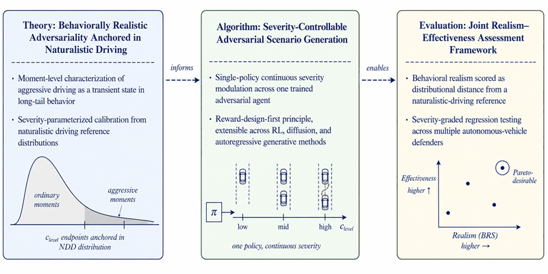
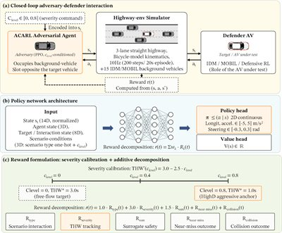
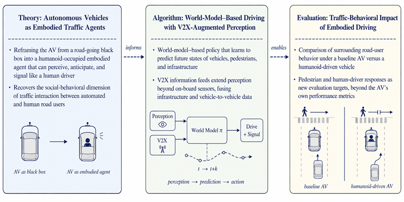
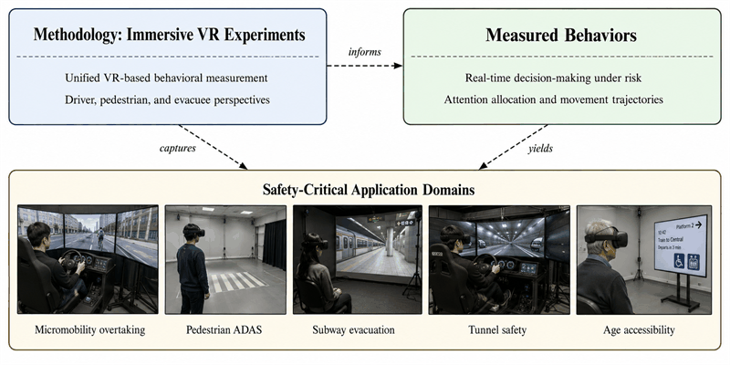
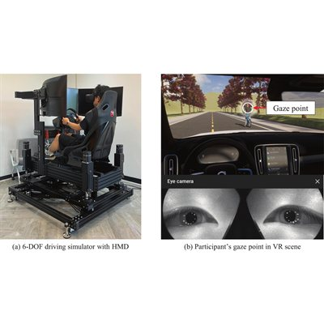
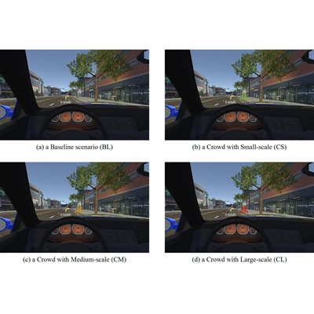
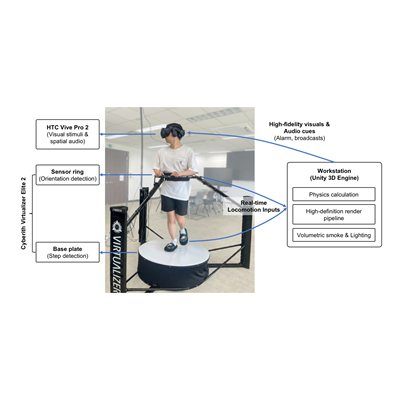
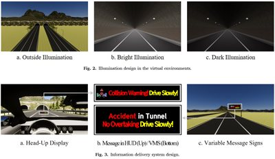
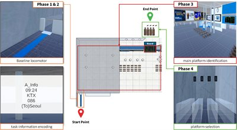

Research
My research sits at the intersection of traffic safety, human factors, and autonomous systems. It covers three topics:
Autonomous vehicle safety evaluation
Simulation-based stress testing, including RL-trained adversarial agents.
V2X-aware humanoid drivers
Humanoid robots that drive using V2X to participate as new traffic agents.
Human-centric traffic safety research
VR experiments on how drivers and pedestrians decide in safety-critical settings.
Autonomous vehicle safety evaluation
Most pedestrian and vehicle models used in AV simulation are conservative and rule-following. I develop RL-trained adversarial agents whose behavior is constrained to remain behaviorally realistic while still stressing AV decision logic — yielding sharper, more informative safety evaluation than either purely random or purely worst-case scenarios.


coming'">Aggressiveness-Calibrated Adversarial Scenario Generation for Highway Autonomous Vehicle Safety Evaluation
Accident Analysis & Prevention, 2026. (Under review.)

Beyond Collision Rate: SUT-Invariant Adversarial Evaluation of Autonomous Driving via Item Response Theory
In preparation, 2026.
V2X-aware humanoid drivers
I am training humanoid robots to drive vehicles using world-model– based learning and V2X information feeds. Rather than treating an autonomous vehicle as a black box on the road, the motivating idea is to place a humanoid agent in the driver's seat that can perceive, anticipate, and signal like a human driver — and then study how embodied driving changes the behavior of surrounding road users.

Human-centric traffic safety research
A long-running line of work using immersive VR experiments to measure how drivers, pedestrians, and evacuees actually decide, attend, and move in safety-critical mobility situations.

Micromobility safety and driver behavior
Drivers share roads with bicycles and e-scooters in increasingly mixed traffic. I study how a driver's own prior riding experience shapes overtaking maneuvers, lateral distance, and risk-taking, using VR-based driving simulators that reproduce realistic urban roadways.

coming'">Micro Mobility Safety Challenges: A Study on Drivers Overtaking Bicycles and E-Scooters according to Road Conditions and Prior Riding Experience
Transportation Research Part F: Traffic Psychology and Behaviour, 2026.
Pedestrian safety and ADAS
How does the way safety information is presented to a driver — a real-time count of crossing pedestrians, or a UWB-based pedestrian tag — change braking behavior, cognitive load, and the safety margins drivers leave under uncertainty? I design and analyze ADAS warning systems with the driver's perception in the loop.

coming'">Effects of Driver's Braking Behavior by the Real-Time Pedestrian Scale Warning System
Accident Analysis & Prevention, vol. 205, 107685, 2024.

Human-Centric Evaluation of UWB-based V2P ADAS: How Pedestrian Tag Adoption Rates Influence Driver Cognitive Load and Safety Performance in School Zones
In preparation, 2026.
Underground and rail safety
Underground and rail environments place people under poor visibility, conflicting cues, and varying perceptual ability. Using VR, I study three settings: how visibility and permissibility signals shape pedestrian evacuation route choice during subway-station fires; how in-tunnel information design affects driver behavior in road tunnels; and how age-related perceptual constraints reshape transport disadvantage in railway information systems.

coming'">From Passive Visibility to Active Permissibility: A Virtual Reality Study on Overcoming Track Avoidance Bias in Subway Station Fires
Underground Space, 2026. (Under review, R1.)

coming'">The Impact of Information Delivery Systems in Tunnels Depending on Lighting Intensity and Speed Limit
Tunnelling and Underground Space Technology, vol. 157, 106365, 2025.

coming'">How Age-Related Constraints Reshape Transport Disadvantage in Railway Information Systems: Evidence from Virtual Aging Simulation
Journal of Urban Mobility, 2026. (Under review.)